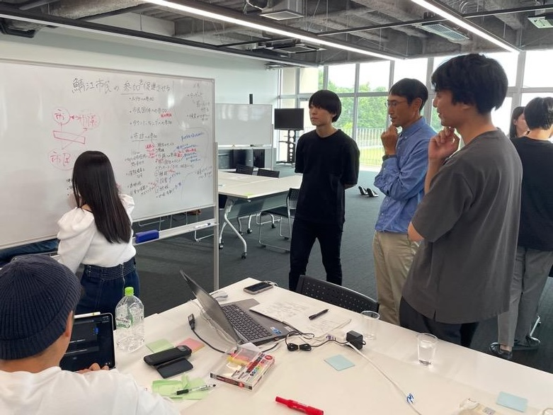

知事杯ハッカソン２０２４ レポート
知事杯ハッカソン２０２４（Day1）が9月28日に開催されました。
その様子をお伝えします。
Day1は、敦賀市さんと鯖江市さんからの課題プレゼンテーションからスタート。
敦賀市さんからは、ほとんどの自治体が抱える切実な課題を提供、鯖江市さんからは、すこし先をいく飛び抜けた課題を提供。
両自治体とも多くの時間を費やした資料を提示しての熱いプレゼンを展開していただきました。
その後すぐに、約2時間のチームに分かれて地域課題に対する解決手段のアイデア出し開始。
作業は、従来からのやり方である付箋をつかったり、白板を使ったり、各々使い慣れた道具を駆使。オフラインとオンライン混合参加のチームはMiroを使いコミュニケーション。

発表では提供自治体から歓喜のコメントがでるくらい独創的な視点からのアイディアが披露されました。
11月2日のDay2までの１ヶ月間の開発期間は、課題提供自治体と運営事務局のエンジニアがしっかりと伴走します。
どのような仕掛けを伴ったプロダクトが仕上がってくるのか大変楽しみです。
【おまけ】
Day1の日の午前中は、初心者対象講座が催され約６割の方がITブートキャンプを体験しました。初心者対象ですが経験者と思われる方々の参加もいただき講座スタート。
 B Inc.つよつよエンジニアが、jig.jp創業者謹製の国内で最も廉価で小さなプログラミング専用のこどもパソコン「IchigoJam」と、簡単に使える開発環境「ESーJam」 を使ってワクワクと感動の体験へ。
約3時間でしたが、コンピュターの仕組みやプログラミングの基礎から始め徐々にレベルアップ。Webプログラミングを習得にとどまらず、AIの手助けを借りたプアプリ作りまで体験しました。作ったアプリは発表していただき参加者全員にアプリを試してもらいワクワクと感動の体験は終了。
みなさんプログラミングは簡単で楽しいことを体験できた容姿で大変好評でした。
【了】
B Inc.つよつよエンジニアが、jig.jp創業者謹製の国内で最も廉価で小さなプログラミング専用のこどもパソコン「IchigoJam」と、簡単に使える開発環境「ESーJam」 を使ってワクワクと感動の体験へ。
約3時間でしたが、コンピュターの仕組みやプログラミングの基礎から始め徐々にレベルアップ。Webプログラミングを習得にとどまらず、AIの手助けを借りたプアプリ作りまで体験しました。作ったアプリは発表していただき参加者全員にアプリを試してもらいワクワクと感動の体験は終了。
みなさんプログラミングは簡単で楽しいことを体験できた容姿で大変好評でした。
【了】